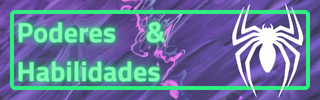
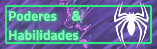

Spider-Man 2099
Miguel O'Hara, es un joven científico de origen mexicano que trabajaba para la corporación Alchemax en un proyecto para crear seres humanos mejorados genéticamente, inspirándose en las habilidades del
Spider-Man del siglo XXI. Adopta la identidad secreta de Spider-Man tras obtener accidentalmente poderes sobrehumanos.
Miguel utiliza un traje de moléculas inestables que compró en México para el Día de los Muertos. Esto le permite usar sus garras libremente, sin el riesgo de dañar su traje. Este disfraz también lleva consigo una "Capa de Telaraña" que le fue dada por un "Thorita". Uno de los adoradores de Thor. Este aditamento emite una baja concentración de partículas de anti-gravedad que le permite planear y desplazarse a grandes velocidades por las corrientes de aire.
Lyla: una forma de inteligencia artificial, con aspecto de mujer, puede simular o imitar emociones humanas. Es la asistente personal de Miguel, le ayuda a resolver problemas, hackear, combatir amenazas y registrar sus entradas personales en un diario. Puede cambiar la apariencia del traje con tecnología holográfica para que parezca uno normal y también proyecta hologramas
Habilidades: Miguel es un experto en el campo de la ingeniería genética. Él también es formidable en el combate mano a mano, a pesar de que ha tenido poco entrenamiento formal. Durante sus combates utiliza un estilo libre de lucha que le permite hacer un uso completo de su fuerza, velocidad y agilidad.
- Visión acelerada: Miguel puede ver objetos a distancias muchos mayores. Además posee el mismo nivel de claridad en la noche, lo cual le brinda la capacidad de ver en la oscuridad casi completa. Esto le permite ver la acción que se desarrolla a su alrededor en forma ralentizada.
- Curación acelerada: Su resistencia y fuerzas físicas superhumanas también le dan un factor de curación muy rápido, pudiendo sanar heridas en horas o días lo que a un humano normal le tomaría semanas. Debido a su metabolismo acelerado, tiene una mayor tolerancia a las drogas y las enfermedades que los seres humanos normales, pudiendo combatir sus efectos en tan sólo cuestión de instantes.
- Garras y colmillos: Sus colmillos se han desarrollado más de lo normal, con ellos puede morder e inyectar veneno al que él mismo es inmune. Tiene unas garras en las yemas de los dedos que puede contraer a voluntad y que le permiten trepar y dañar a sus enemigos.
- Telaraña orgánica: En sus antebrazos se han desarrollado glándulas especiales capaces de generar una substancia orgánica que, al contacto con el aire, se polimeriza bajo forma de hilos pegajosos parecidos a la tela de las arañas comunes. Es capaz de lanzar estos hilos a varias decenas de metros de distancia.
- Señuelo acelerado: Esta habilidad le permite a Miguel moverse tan rápido que puede dejar atrás una imagen residual de su cuerpo para que los enemigos la ataquen y así evadir el daño causado.
Debilidades: Los ojos de Miguel son más sensibles a la luz que los de un ser humano normal, por lo que es más vulnerable a los destellos y deslumbramientos. En situaciones extremas puede producirse derrame de córnea o quedar cegado durante un periodo de tiempo prolongado.

Miles Morales
Miles Gonzalo Morales es un adolescente de ascendencia afroamericana y latina residente en Brooklyn; quien después de haber sido mordido por una araña genéticamente modificada diseñada por el némesis de Spider-Man, Norman Osborn, asumió la identidad de Spider-Man en el Universo Ultimate tras la muerte de Peter Parker.
Posteriormente, tras las Guerras Secretas y la destrucción del multiverso, Miles y su familia fueron desplazados a la nueva Tierra-616 y comparte el título de Spider-Man con el
Peter Parker de este universo.
Habilidades
- Rayo Venenoso: El cuerpo de Miles posee una enorme cantidad de bio-energía que ha aprendido a canalizar y descargar para paralizar temporalmente a sus enemigos con tal solo tocarlos. Parece que hay varios grados de esta capacidad, ya que algunos oponentes han sido simplemente aturdidos mientras otros han sido completamente incapacitados. Este poder proporciona una gran ventaja para Miles ya que puede terminar rápidamente una confrontación con poco daño colateral. El rayo venenoso ha demostrado ser la habilidad más poderosa de Miles, capaz de detener a pesos pesados como el Duende Verde o hasta el demonio Blackheart.
- Explosión de Energía: Miles puede generar una fuerte explosión de energía capaz de derribar a quien este a su alrededor. Lamentablemente, usar este poder deja debilitado a Miles pudiendo usarlo solo una vez.
- Camuflaje Arácnido:Miles, incluyendo su ropa, puede mezclarse con su entorno, lo que le permite acercarse sigilosamente a sus enemigos o, en algunos casos, huir de ellos. El efecto resultante se parece mucho al de la invisibilidad.


 
